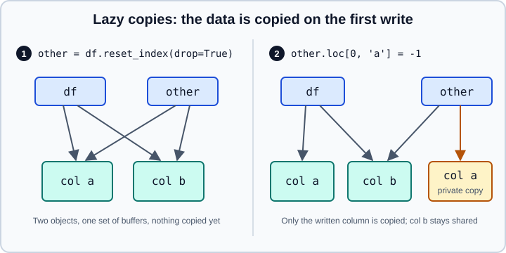
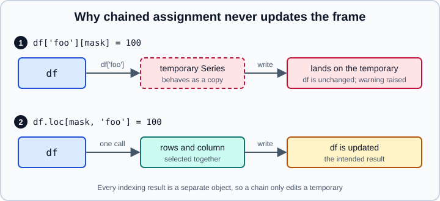

Copy-on-Write
|
This content was generated with the assistance of AI and should be verified against the official documentation before being relied on in production. |
This page was checked in October 2026 against pandas 3.1 (3.1.0, released 2026-10-22) on Python 3.13 with NumPy 2.5, and the printed output of every example was produced on those versions. Copy-on-Write (CoW) is the only behaviour in pandas 3.x: there is no option to switch it off, and the code you write no longer has to guess whether an indexing result is a view or a copy. The page explains the rule, what changed for everyday code, the few places where a NumPy array can still be shared, and how to move code that was written for pandas 1.x or 2.x.
The one rule
Every DataFrame or Series that is derived from another one behaves as an independent copy. The values of an object can only be changed by modifying that object directly, and changing one object can never silently change another. This covers indexing results (df[mask], df["a"], df[["a", "b"]], slices), the return value of every method, and objects built from other pandas objects.
Before pandas 3.0 the result of df[...] was sometimes a view of the parent and sometimes a copy, depending on internal memory layout, and pandas warned with SettingWithCopyWarning when it suspected a write to a copy. Both the ambiguity and the warning are gone. SettingWithCopyWarning no longer exists, and the defensive .copy() calls that older code sprinkled everywhere are not needed to protect a parent frame.
import pandas as pd
df = pd.DataFrame({"city": ["Oslo", "Lima", "Kyiv"], "temp": [4, 19, 8]})
subset = df[df["temp"] > 5]
subset.loc[:, "temp"] = 0 # changes only the subset
print(df)
column = df["temp"]
column.iloc[0] = 99 # changes only the column object
print(df["temp"].tolist())
df.loc[0, "temp"] = 5 # modify the object itself
print(df["temp"].tolist())Output:
city temp 0 Oslo 4 1 Lima 19 2 Kyiv 8 [4, 19, 8] [5, 19, 8]
The consequence worth remembering is that the only way to change df is to write to df. A function that receives a frame and modifies it changes only the frame it was given, and a subset that you modify is not a window onto the original.
Timeline
| Version | Copy-on-Write |
|---|---|
1.5 |
Introduced as an opt-in option ( |
2.0 |
Most of the optimisations arrive, including lazy copies in constructors and methods |
2.1 |
All the optimisations are supported; inplace methods on temporary column selections always warn |
2.2 |
|
3.0 (2026-01-21) |
The only mode; |
3.1 (2026-10-22) |
|
The pd.options.mode.copy_on_write option can still be read and set in 3.1, but setting it does nothing. Delete any line that sets it.
Lazy copies and why CoW is cheap
If every derived object were copied immediately, CoW would double the memory use and the run time of most pipelines. pandas avoids that with lazy copies: a derived object initially shares the buffers of its parent, and the data is copied only when one of the two objects is modified. Methods that do not need to copy at all, such as DataFrame.drop(columns=...) and DataFrame.rename(), return objects that share the data until a write happens.

Panel 1 shows the state right after reset_index: two objects, one set of buffers. Panel 2 shows the state after the first write through other: pandas copies only column a, and column b remains shared.
import numpy as np
import pandas as pd
df = pd.DataFrame({"a": [1, 2, 3], "b": [4.0, 5.0, 6.0]})
other = df.reset_index(drop=True) # lazy copy, no data copied yet
def shares(x, y, col):
return np.shares_memory(x[col].to_numpy(), y[col].to_numpy())
print("after reset_index:", shares(df, other, "a"))
other.loc[0, "a"] = -1 # first write copies column "a" only
print("after write to a: ", shares(df, other, "a"))
print("column b still shared:", shares(df, other, "b"))
print(df["a"].tolist(), other["a"].tolist())Output:
after reset_index: True after write to a: False column b still shared: True [1, 2, 3] [-1, 2, 3]
Two practical consequences follow from how the laziness works:
-
Reassign to the same name. In
df = df.reset_index(drop=True)the old frame loses its last reference, so nothing needs to be copied when the new frame is modified. Keeping bothdfand the result alive (df2 = df.reset_index(drop=True)) forces a copy on the first write to either, which costs time and memory. -
Do not add defensive copies. A
.copy()that was needed in pandas 2 to protect the parent is now pure overhead. Call.copy()only when you want an independent object up front, for example before handing data to code that you do not control and that writes through a NumPy array (see below).
For the same view-and-copy ideas at the NumPy level, where the rules are different and a slice really is a view, see Copies and Views.
Chained assignment never works
Chained assignment is an assignment whose target is the result of a previous indexing step, such as df["foo"][mask] = 100. Python evaluates df["foo"] first, which now returns a separate Series, and then writes into that temporary. The write succeeds on the temporary and the DataFrame never sees it.

In pandas 3.x every attempt is detected where possible and reported as a ChainedAssignmentError. Despite the name, it is a warning (a Warning subclass), not an exception, so a script keeps running with unchanged data unless warnings are turned into errors.
import warnings
import pandas as pd
df = pd.DataFrame({"foo": [1, 2, 3], "bar": [4, 7, 9]})
with warnings.catch_warnings(record=True) as caught:
warnings.simplefilter("always")
df["foo"][df["bar"] > 5] = 100 # chained: sets on a temporary
df.loc[df["bar"] > 5]["foo"] = 100 # chained through a copy as well
print([type(w.message).__name__ for w in caught])
print(df["foo"].tolist()) # unchanged
df.loc[df["bar"] > 5, "foo"] = 100 # one indexer, the whole job
print(df["foo"].tolist())
df["foo"] = df["foo"].where(df["bar"] <= 5, 0) # whole-column alternative
print(df["foo"].tolist())
# Escalate the warning to an exception while migrating
warnings.simplefilter("error", pd.errors.ChainedAssignmentError)
try:
df["foo"][df["bar"] > 5] = 1
except pd.errors.ChainedAssignmentError as exc:
print("raised:", str(exc).splitlines()[0])Output:
['ChainedAssignmentError', 'ChainedAssignmentError'] [1, 2, 3] [1, 100, 100] [1, 0, 0] raised: A value is being set on a copy of a DataFrame or Series through chained assignment.
The fix is to do the whole job in a single call. df.loc[mask, "foo"] = 100 selects rows and column together and writes into df. For purely positional code, df.iloc[0, df.columns.get_loc("foo")] = 100 does the same. Using df.loc[df.index[...], "foo"] is equivalent only when the row index has unique labels. For conditional replacement of a whole column, assigning df["foo"].where(cond, other) is often the clearest option. In a migration, warnings.simplefilter("error", pd.errors.ChainedAssignmentError) makes every offending line fail with a traceback.
Common patterns
| Old code | What happens in pandas 3.x | Replacement |
|---|---|---|
|
Writes to a temporary; |
|
|
Writes to a copy; |
|
|
No longer updates |
|
|
No longer updates |
|
|
Only |
|
|
Works, but the copy is redundant |
|
Inplace methods on an intermediate selection are a variant of the same mistake: the method works on the temporary and df stays as it was. The last two rows are the case that earlier versions warned about with SettingWithCopyWarning; in pandas 3.x the code is simply well defined, and the only question is whether you wanted the parent to change.
Arrays returned by pandas are read-only views
Because pandas must never allow a write that would bypass CoW, to_numpy() on a Series, and on a DataFrame whose columns share a single internal block, returns a read-only view of the data. Writing to it fails immediately instead of silently corrupting a lazy copy.
import numpy as np
import pandas as pd
ser = pd.Series([1.0, 2.0, 3.0])
arr = ser.to_numpy()
print("writeable:", arr.flags.writeable)
try:
arr[0] = 10
except ValueError as exc:
print("ValueError:", exc)
safe = ser.to_numpy(copy=True) # a private, writeable copy
safe[0] = 10
print(ser.tolist(), safe.tolist())
single = pd.DataFrame({"x": [1.0, 2.0], "y": [3.0, 4.0]}) # one float64 block
mixed = pd.DataFrame({"x": [1.0, 2.0], "n": [3, 4]}) # two blocks
print("single block:", single.to_numpy().flags.writeable)
print("mixed blocks:", mixed.to_numpy().flags.writeable)
print("Index.values:", pd.Index([1, 2, 3]).values.flags.writeable)Output:
writeable: False ValueError: assignment destination is read-only [1.0, 2.0, 3.0] [10.0, 2.0, 3.0] single block: False mixed blocks: True Index.values: False
A DataFrame with several dtypes has to build a new array to combine them, so it returns a writeable copy; that is why the result depends on the layout. Do not rely on the layout: treat every array that comes from pandas as read-only and take to_numpy(copy=True) (or np.array(obj)) when you intend to write. Setting arr.flags.writeable = True is faster, but it bypasses the protection and can modify a frame that is shared lazily, so reserve it for code that you fully control. Since pandas 3.1, Index.values and Index.array are read-only as well.
Constructors copy NumPy input
DataFrame, Series and Index constructors copy NumPy arrays by default, so a frame built from an array is not affected by later writes to that array. Pass copy=False to share the buffer instead. The sharing then goes both ways, because CoW tracks references between pandas objects and cannot observe a write that goes through the NumPy array.
import numpy as np
import pandas as pd
a = np.array([1, 2, 3])
copied = pd.Series(a) # default: copies the NumPy array
shared = pd.Series(a, copy=False) # opt in to sharing the buffer
a[0] = 100 # CoW cannot see writes made through NumPy
print("copied:", copied.tolist())
print("shared:", shared.tolist())
shared.iloc[1] = -2 # the only holder of the buffer writes into it
print("a after write via shared Series:", a.tolist())Output:
copied: [1, 2, 3] shared: [100, 2, 3] a after write via shared Series: [100, -2, 3]
Use copy=False only for large arrays that you promise not to touch elsewhere. The same applies to a view that you get from np.asarray(df), a PyArrow-backed object or any other zero-copy bridge: pandas protects you from other pandas objects, not from other libraries holding the same memory.
Other behaviours that follow from the rule
Each change is the same rule seen from a different angle.
-
Only one pandas object changes per operation. An inplace method called on a selected column acts on the temporary column, so
df["foo"].replace(1, 5, inplace=True)leavesdfunchanged and raisesChainedAssignmentError. Call the method on the frame (df.replace({"foo": {1: 5}})) or assign the result back to the column. -
Metadata on a column does not stick.
df["a"].attrs["unit"] = "m"writes to a fresh Series that is discarded. Put the metadata inDataFrame.attrsinstead. -
Functions cannot leak writes to their callers. A function that adds or changes columns on its argument affects only that object.
-
Views of the parent do not propagate. After
view = df[:], writing todfdoes not changeview.
import pandas as pd
def add_total(frame):
frame["total"] = frame["a"] + frame["b"] # modifies only the object it was given
return frame
df = pd.DataFrame({"a": [1, 2], "b": [10, 20]})
result = add_total(df[["a", "b"]]) # no defensive .copy() needed
print(df.columns.tolist(), result.columns.tolist())
df["a"].attrs["unit"] = "m" # lost: df["a"] is a fresh Series
print(df["a"].attrs)
df.attrs["unit"] = "m" # kept on the DataFrame
print(df.attrs)Output:
['a', 'b'] ['a', 'b', 'total']
{}
{'unit': 'm'}
One boundary remains: CoW does not make a mutation inside apply, transform or agg safe. A function that mutates the row or column it receives (for instance with pop) can still break the iteration that pandas is running, so copy inside the function. That case, and others, are covered in FAQ and Gotchas.
Migrating pandas 1.x and 2.x code
-
Upgrade to pandas 2.3 first (the last 2.x release is 2.3.3) and fix the deprecation warnings it raises.
-
In 2.2 or 2.3, set
pd.options.mode.copy_on_write = "warn"and run the test suite. The warnings are deliberately broad and many do not matter, so look for chained assignment, inplace calls on column selections and writes to arrays fromto_numpy(); you do not need to remove every warning. -
Also run once with
pd.options.mode.copy_on_write = Trueto see the real 3.x behaviour, and turnChainedAssignmentErrorinto an error in the tests. -
Replace each chain with a single
locoriloccall, or assign the result of the method back. -
Remove
SettingWithCopyWarningimports and handlers, which no longer have anything to catch, and drop defensive.copy()calls that only guarded a parent frame. -
Remove writes through arrays that came from
to_numpy()or.values; copy first. -
Remove lines that set
mode.copy_on_writeormode.chained_assignment, which are deprecated in 3.1 and removed in 4.0.
The wider checklist, including the str dtype, datetime resolution and removed keywords, is in What’s New in 3.x and Migrating.
Related pages
-
NumPy: Copies and Views for the array-level rules that pandas builds on.
-
Indexing and Selecting for
loc,ilocand boolean masks. -
Essential Basic Functionality for
to_numpy,.arrayand.values. -
Enhancing Performance for the memory and speed effects of avoiding copies.
-
Options and Settings for the deprecated options.